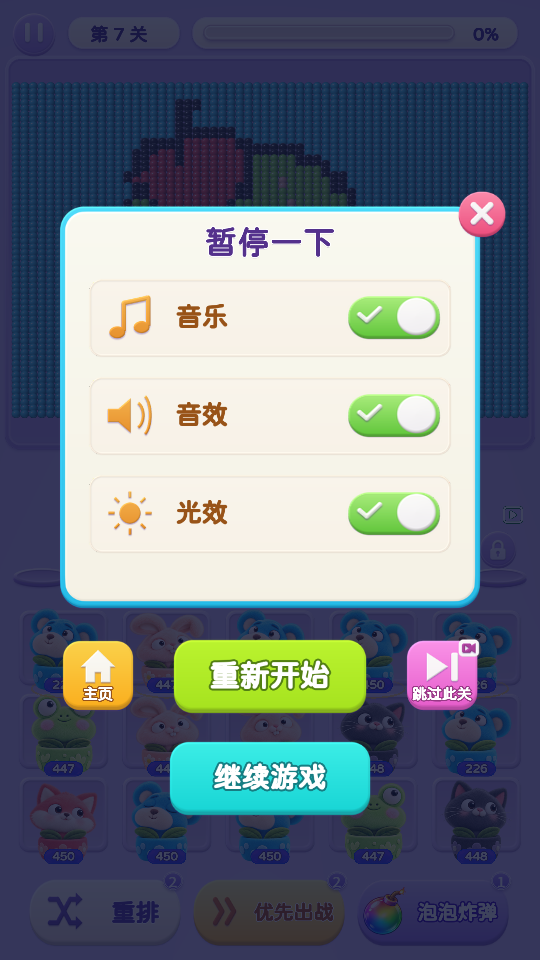
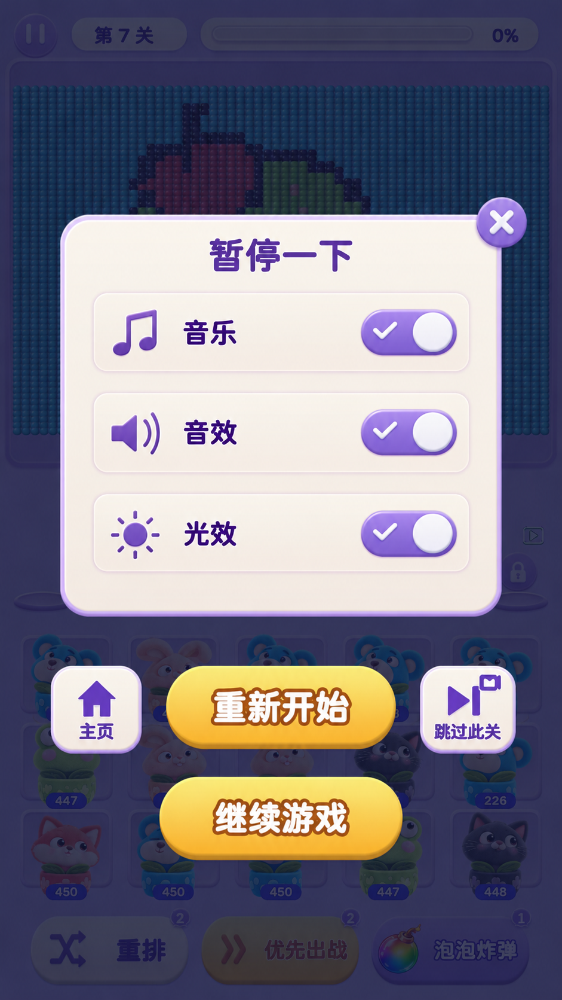

<!doctype html>
<html lang="zh-CN">
<meta charset="utf-8">
<meta name="viewport" content="width=device-width, initial-scale=1">
<title>暂停框风格对比</title>
<style>
*{box-sizing:border-box}body{margin:0;background:#eee8f5;color:#493167;font-family:system-ui,-apple-system,sans-serif}main{max-width:1160px;margin:auto;padding:28px 24px}h1{font-size:24px;margin:0 0 8px}p{margin:0 0 22px;color:#78658b;font-size:14px}.pair{display:grid;grid-template-columns:1fr 1fr;gap:24px}figure{margin:0;min-width:0}figcaption{margin:0 0 12px;font-weight:700;font-size:17px}img{display:block;width:100%;height:auto;border-radius:12px;box-shadow:0 6px 22px #45315522}a{display:block;text-decoration:none;color:inherit}.note{font-size:13px;color:#78658b;margin-top:10px}@media(min-width:1000px){main{max-width:1000px}.pair{gap:36px}}@media(max-width:600px){main{padding:18px 12px}.pair{gap:12px}figcaption{font-size:14px}h1{font-size:20px}}
</style>
<main>
<h1>暂停框风格对比</h1>
<p>对比按钮、弹框边框与面板底色。右侧为视觉示意，尚未应用到游戏。</p>
<div class="pair">
<figure><figcaption>当前版本</figcaption><a href="../StreakDialog-20261024/evidence/pause-style.png" target="_blank"></a><div class="note">青色边框 · 奶油面板 · 绿色 / 青色按钮</div></figure>
<figure><figcaption>参考风格示意</figcaption><a href="mockup.png" target="_blank"></a><div class="note">浅紫边框 · 奶油米色面板 · 金黄色圆润按钮</div></figure>
</div>
</main>
</html>
